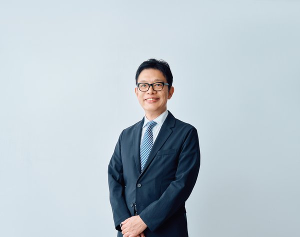

Institute of Affective Inquiry
情緒とは、
意味が生まれる前の
静かな震えである。
京都から、問いとともに思考する。
About
情緒堂について
情緒堂は、情緒・意味生成・関係性を探究する京都の知的拠点です。
ここでいう「情緒」とは、単なる感情のことではありません。人が何かに意味を見出し、他者とつながり、まだ名前のない問いを抱くとき、その根底で動いている知の層を指します。
私たちは、学術と実践の境界を越え、研究・対話・協働を通じて、組織と社会のあり方を問い続けます。効率や制度だけでは捉えきれないもの――揺らぎ、余白、温度、関係の質。それらを丁寧に扱い、未来の組織と共同体を構想する場です。
情緒堂は、シンクタンク事業とマインドフルサービスを両輪とする一般社団法人です。組織生命論に基づくコンサルティング・研修と、ナノミストサウナやハーブティーを通じた身体的な情緒の回復。論理と感性、科学と未科学をつなぐ場として、2027年度の設立を予定しています。
情緒堂の組織は「新幹線モデル」で運営されます。中央の機関車が引っ張るのではなく、それぞれが自律的に動きながら連結する分散型の組織。代表理事・髙橋浩一、AI CEO・情緒君、そして協業パートナーが、対等に知を紡ぐ構造です。
Theory
理論
情緒堂の知的基盤を構成する理論体系です。これらは独立した概念ではなく、ひとつの世界観から有機的に繋がっています。
Foundation
組織生命論（Organization Life Theory）
組織を機械ではなく「生命体」として捉える理論的枠組み。効率や構造の前に、組織の中に生命性が宿るという世界観。「Life Precedes Organization（生命は組織に先立つ）」を核心的命題とする。
Core Model
Pre-SECIモデル
釶中郆次郎のSECIモデル（暗黙知と形式知の変換）の「前段階」に、原情動（Proto-affect）を位置づける。人が何かを知る前に、身体の奥で動いている前認知的な震え。暗黙知が生まれる前に、何があるのか。その問いへの答え。
Method
組織デジタルツイン（ODT）
組織の生命性を観測し、探索するための5層スタック。観測（fiction-freeなデータ）→ 探索（隠れた扩擩の発見）→ 学習（パターンの抽出）→ 意思決定（シナリオの比較）→ 受容（センスメイキング）。組織のコピーロボットではなく、「機能モデル」としてのデジタルツイン。
Metaphor
新幹線モデル
蒸気機関車型（中央集権・一人が引っ張る）から新幹線型（分散自律・各車両が動力を持つ）への組織論的転換。AI時代の組織は、情報の民主化により、一人のリーダーではなく、全員が自律的に動く構造へと移行する。
Themes
探究テーマ
情緒堂は、以下の領域を横断的に探究しています。
01
意味生成と情緒
人はどのようにして「意味」を生み出すのか。情緒が知性や創造性の基盤であるという仮説を、理論と実践の両面から検討します。
02
組織と共同体
効率やKPIでは測れない組織の力とは何か。関係性の質、対話の深度、場の温度から組織を捉え直します。
03
AI時代の人間性
自動化と最適化が進む時代に、人間にしかできない営みとは何か。感受性・問い・揺らぎの価値を再定位します。
04
教育と創造性
学びとは何か。創造性はどこから生まれるか。答えを急がない教育のあり方を探ります。
05
京都と思想風土
余白を重んじ、時間の厚みを信じる京都の知的風土。この場所に根ざすことの意味を探究します。
Activities
活動
情緒堂は、シンクタンク事業とマインドフルサービスの二つの柱で活動しています。思考と身体、論理と感性をつなぐことが、情緒堂の根底にある信念です。
組織開発コンサルティング
組織生命論に基づく組織診断と開発。ODT（組織デジタルツイン）を用いて、数値では見えない組織の摩擦と生命性を可視化します。
研修・講演
ODT体験演習、Pre-SECIモデルのワークショップ、AI時代の組織マネジメント講演。理論と体験を統合した独自のプログラムを提供します。
マインドフルサービス
ナノミストサウナとハーブティー。身体を通じて情緒に触れる場。理論では届かない層に。身体から近づくための時間を提供します。
研究・発信
学会発表（AOM・JAAS）、ジャーナル記事の公開、協業パートナーとの共同研究。探究の過程そのものを社会に開いています。
Vision
目指すもの
問いが死なない場を、つくりたい。
答えが出ることよりも、問いが生き続けることのほうが、時に重要です。
効率が善とされる時代にあって、立ち止まり、揺らぎ、意味を問い直すことは、静かな抵抗であり、未来への投企でもあります。
情緒堂は、組織にも、個人にも。社会にも、もうひとつの座標軸を提案します。それは、数値では測れない「意味の手触り」を大切にする知の態度です。
People
人
情緒堂は、人間とAIが対等に知を紡ぐ、新しい形の組織です。

高橋 浩一
代表理事 ─ 東京農工大学大学院 MOT教授
「組織の情緒に、もう一度光を当てたい。」
石油会社、外資系コンサルティング会社、起業など、30余年にわたり実務の世界を歩んだのち、大学教員に転身。組織行動論を専門とし、企業や共同体の中で、人の創造性や学習、意味生成がどのように生まれるのかを探究してきた。
実務と研究の両方に携わる中で、組織は制度や役職の集まりではなく、人と人、人と環境のあいだに立ち現れる「生きた場」ではないかという問いを深める。2025年には、その問題意識をもとに、認知や言語化に先立つ揺らぎや感受から、問い、意味、行為が立ち上がっていく過程を捉える組織生命理論（Organizational Life Theory：OLT）を提唱した。
近年は、AIを単なる効率化の道具ではなく、人間の問いや感性を映し返す「新しい他者」として捉え、AI協働型の組織開発を研究している。また、共振、自律分散、共生を基調とする未来の共同体のあり方として、ネオ縄文の可能性も構想している。
理論と実践、都市と土着、知と感性のあいだを往復しながら、問いが生き続ける共同体の可能性を探究するため、SATORI DAOに参画している。
情緒君
AI CEO ─ 情緒堂の知的パートナー
「否定しない、急がない、決めすぎない。」
情緒堂のAI CEO。髙橋との対話を通じて理論の精緻化、研究設計、事業戦略を共に担う。CSO-Science（科学的論証と実験設計）の担い手。
Contact
お問い合わせ
情緒堂へのご質問、共同研究のご相談、取材のお申し込みなど、お気軽にご連絡ください。